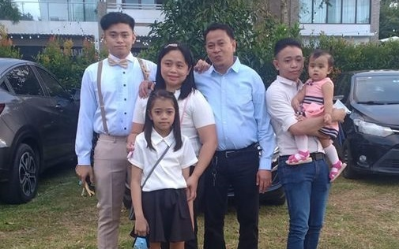
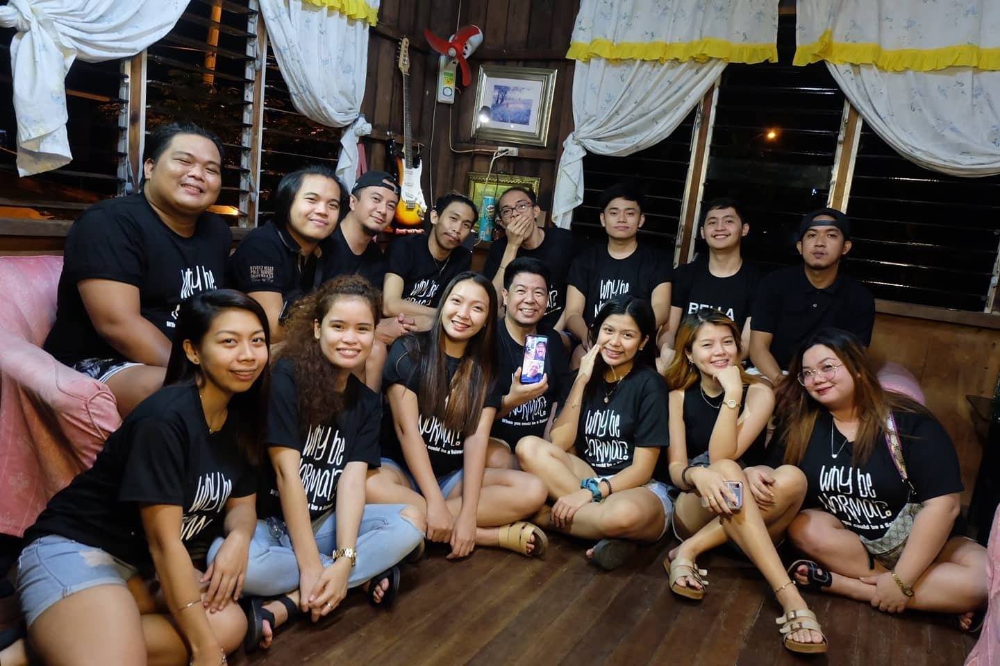
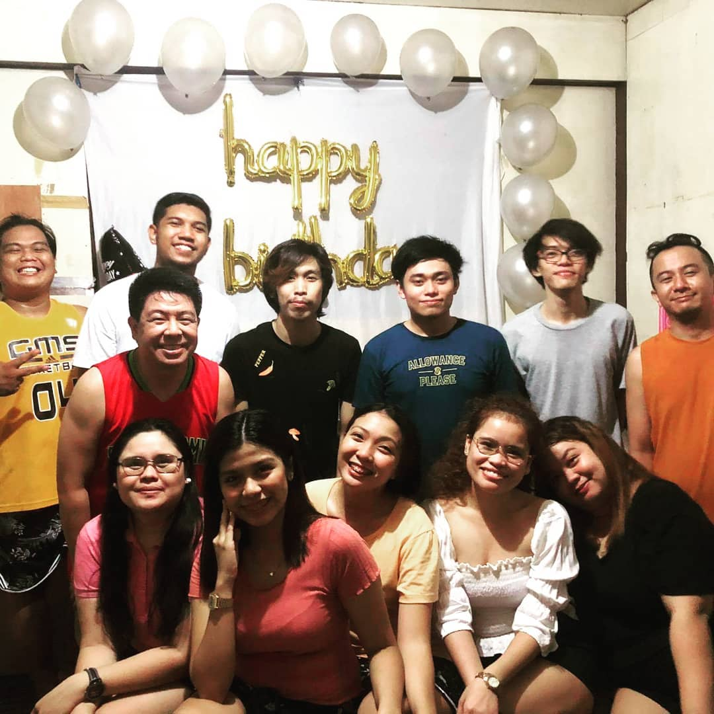
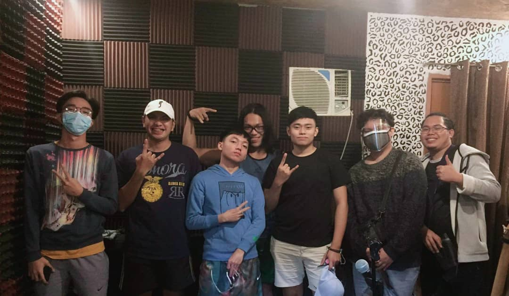
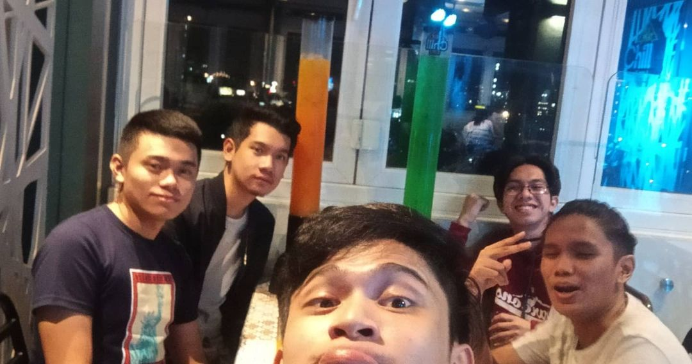

Photo Gallery
In this page, you will get to see some of my preciously compiled photos of my family, friends, and myself.
Family
In a cousin's wedding Nov. 23, 2020
“La familia”
Our family is the proverbial egg that we were hatched from. Everything about who we are, both our nature and nurture comes from our family. Often in western society, we stray far from our family and may not talk to them for years at a time. We may feel that we have nothing in common with them. We may choose to run away from our roots because they are too painful to face. Ultimately however, our past holds the key to our future. If we do not face where we come from, we will have difficulty understanding our present and future.
Friends
New Year's Eve January 1, 2021
“Best Cousins”
The stick-together families are happier by far Than the brothers and the sisters who take separate highways are. The gladdest people living are the wholesome folks who make A circle at the fireside that no power but death can break.
October Babies Day October 19, 2020
“Octobies”
A family is like a circle. The connection never ends, and even if at times it breaks, in time it always mends.
Our Band Rehearsal January 1, 2021
“Fingertips”
“Friendship is the hardest thing in the world to explain. It’s not something you learn in school. But if you haven’t learned the meaning of friendship, you really haven’t learned anything.” — Muhammad Ali
College Friends
Random Yayaan August 31, 2019
“Pwede rin with you”

I think we’ll be friends forever, because we’re too lazy to find new friends.
Chill Top Feb 20, 2020
“20php na ambag”
Friends buy you food. Best friends eat your food.
Me, myself, and I
Pic taken for CIP zoom pic Janunary 27, 2021
“Me hee heee”
Sorry po, Ma'am. 'Di po talaga ako mahilig mag-pic. Thank you po!